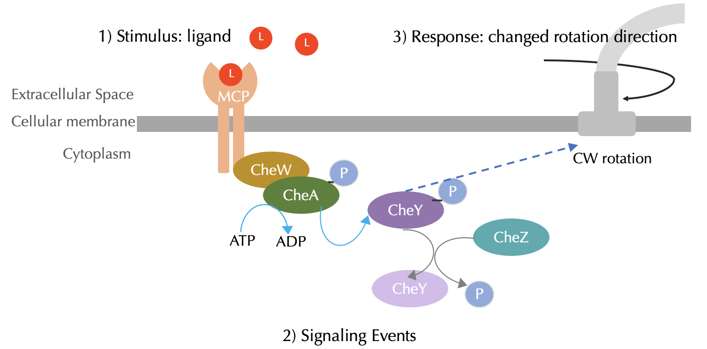

Software Tutorial: Adding Phosphorylation to our BioNetGen Model
In this tutorial, we will extend the BioNetGen model covered in the ligand-receptor tutorial to add the phosphorylation chemotaxis mechanisms described in the main text, shown in the figure reproduced below.

To get started, create a copy of your file from the ligand-receptor tutorial and save it as phosphorylation.bngl. If you would rather not follow along below, you can download a completed BioNetGen file here:
phosphorylation.bngl
Defining molecules
First, we introduce a state into the receptor and CheY particles to mark whether they are is phosphorylated or not. The notation Phos~U~P indicates we introduce phosphorylation states to a molecule (U indicates unphosphorylated, and P indicates phosphorylated). We also add molecule CheY(Phos~U~P) and CheZ(). (Note: be careful with the use of spaces; don’t put spaces after the comma in the specification of the receptor.)
begin molecule types
L(t) #ligand molecule
T(l,Phos~U~P) #receptor complex
CheY(Phos~U~P)
CheZ()
end molecule types
During this simulation, we are interested in tracking the concentration of phosphorylated CheY and CheA (receptor complex) along with the concentration of the ligand.
begin observables
Molecules phosphorylated_CheY CheY(Phos~P)
Molecules phosphorylated_CheA T(Phos~P)
Molecules bound_ligand L(t!1).T(l!1)
end observables
Defining reactions
Now we are ready to update our reaction rules to include phosphorylation and dephosphorylation in addition to the ligand-receptor reaction. These rules were discussed in the main text and are reproduced below.
begin reaction rules
LigandReceptor: L(t) + T(l) <-> L(t!1).T(l!1) k_lr_bind, k_lr_dis
#Free vs. ligand-bound complexes autophosphorylates
FreeTP: T(l,Phos~U) -> T(l,Phos~P) k_T_phos
BoundTP: L(t!1).T(l!1,Phos~U) -> L(t!1).T(l!1,Phos~P) k_T_phos*0.2
YP: T(Phos~P) + CheY(Phos~U) -> T(Phos~U) + CheY(Phos~P) k_Y_phos
YDep: CheZ() + CheY(Phos~P) -> CheZ() + CheY(Phos~U) k_Y_dephos
end reaction rules
Initializing molecules and parameters
To initialize our simulation, we need to indicate the number of molecules in each state present at the beginning of the simulation. Since we are adding ligands at the beginning of the simulation, the initial amount of molecules at each same state should be equal to the equilibrium concentrations when no ligand is present. To this end, we set the amount of phosphorylated receptor equal to one-fourth the concentration of unphosphorylated receptor, and the concentration of phosphorylated CheY to be equal to the concentration of unphosphorylated CheY. (Note: this was validated through trial and error.)
begin seed species
L(t) L0
T(l,Phos~U) T0*0.8
T(l,Phos~P) T0*0.2
CheY(Phos~U) CheY0*0.5
CheY(Phos~P) CheY0*0.5
CheZ() CheZ0
end seed species
We now set initial quantities of molecules along with reaction rate parameters to be consistent with in vivo quantities 123.
begin parameters
NaV 6.02e8 #Unit conversion to cellular concentration M/L -> #/um^3
L0 0 #number of ligand molecules
T0 7000 #number of receptor complexes
CheY0 20000
CheZ0 6000
k_lr_bind 8.8e6/NaV #ligand-receptor binding
k_lr_dis 35 #ligand-receptor dissociation
k_T_phos 15 #receptor complex autophosphorylation
k_Y_phos 3.8e6/NaV #receptor complex phosphorylates CheY
k_Y_dephos 8.6e5/NaV #Z dephosphoryaltes CheY
end parameters
Important note: The parameters section has to appear before the reaction rules section.
Place everything occurring above between begin model and end model tags.
Simulating responses to attractants
Before running the simulation, let’s think about what will happen. If we don’t add any ligand molecule into the system, then assuming that we have started the simulation at steady-state, then the concentrations of phosphorylated receptors and CheY will remain at equilibrium.
We can now run the simulation, setting t_end equal to 3 in order to run the simulation for longer than we did in the ligand-receptor tutorial. Place the following after end model in your BioNetGen file.
generate_network({overwrite=>1})
simulate({method=>"ssa", t_end=>3, n_steps=>100})
The following code contains our complete simulation, which you can also download here: phosphorylation.bngl
begin model
begin molecule types
L(t) #ligand molecule
T(l,Phos~U~P) #receptor complex
CheY(Phos~U~P)
CheZ()
end molecule types
begin observables
Molecules phosphorylated_CheY CheY(Phos~P)
Molecules phosphorylated_CheA T(Phos~P)
Molecules bound_ligand L(t!1).T(l!1)
end observables
begin parameters
NaV2 6.02e8 #Unit conversion to cellular concentration M/L -> #/um^3
L0 5e3 #number of ligand molecules
T0 7000 #number of receptor complexes
CheY0 20000
CheZ0 6000
k_lr_bind 8.8e6/NaV2 #ligand-receptor binding
k_lr_dis 35 #ligand-receptor dissociation
k_T_phos 15 #receptor complex autophosphorylation
k_Y_phos 3.8e6/NaV2 #receptor complex phosphorylates Y
k_Y_dephos 8.6e5/NaV2 #Z dephosphoryaltes Y
end parameters
begin reaction rules
LR: L(t) + T(l) <-> L(t!1).T(l!1) k_lr_bind, k_lr_dis
#Free vs. ligand-bound receptor complexes autophosphorylates at different rates
FreeTP: T(l,Phos~U) -> T(l,Phos~P) k_T_phos
BoundTP: L(t!1).T(l!1,Phos~U) -> L(t!1).T(l!1,Phos~P) k_T_phos*0.2
YP: T(Phos~P) + CheY(Phos~U) -> T(Phos~U) + CheY(Phos~P) k_Y_phos
YDep: CheZ() + CheY(Phos~P) -> CheZ() + CheY(Phos~U) k_Y_dephos
end reaction rules
begin seed species
L(t) 0
T(l,Phos~U) T0*0.8
T(l,Phos~P) T0*0.2
CheY(Phos~U) CheY0*0.5
CheY(Phos~P) CheY0*0.5
CheZ() CheZ0
end seed species
end model
generate_network({overwrite=>1})
simulate({method=>"ssa", t_end=>3, n_steps=>100})
Now save your file and run the simulation by clicking Run under Simulate. What do you observe?
When we add ligand molecules into the system, as we did in the tutorial for ligand-receptor dynamics, the concentration of bound receptors should increase. What will happen to the concentration of phosphorylated CheA, and phosphorylated CheY? What will happen to steady state concentrations?
Now run your simulation by changing L0 to be equal to 5000 and then run it again with L0 to be equal to 1e5. Do the results confirm your hypothesis? What happens as we keep changing L0? What happens as L0 gets really large (e.g., 1e9)? What do you think is going on?
In the main text, we will explore the results of the above simulation. We will then interpret how differences in the amounts of initial ligand can influence changes in the concentration of phosphorylated CheY (and therefore the bacterium’s tumbling frequency).
-
Li M, Hazelbauer GL. 2004. Cellular stoichimetry of the components of the chemotaxis signaling complex. Journal of Bacteriology. Available online ↩
-
Spiro PA, Parkinson JS, and Othmer H. 1997. A model of excitation and adaptation in bacterial chemotaxis. Biochemistry 94:7263-7268. Available online. ↩
-
Stock J, Lukat GS. 1991. Intracellular signal transduction networks. Annual Review of Biophysics and Biophysical Chemistry. Available online ↩